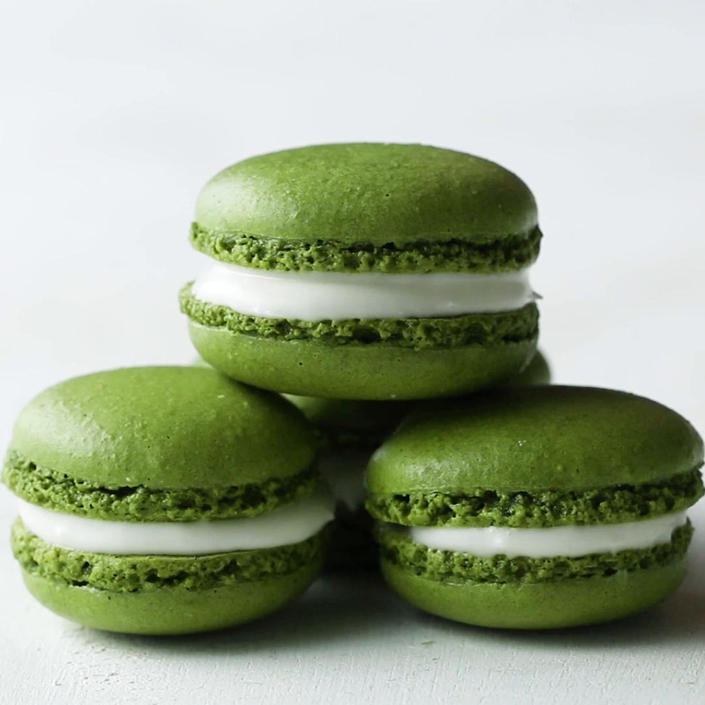

Matcha Macarons
Ingredients
- Egg white
- Granulated sugar
- Almond flour
- Powdered sugar
- Matcha powder
- Cream cheese
- Milk
Directions
- In a medium mixing bowl, beat the egg whites with an electric hand mixer on medium speed until soft peaks form. Add ½ of the granulated sugar and with mixer on high, continue to beat until egg whites are stiff peaks. Repeat with last ½ of sugar, beating until whites are shiny and fluffy.
- Using a fine mesh strainer, sieve the almond flour, powdered sugar, and matcha into the bowl with the egg whites. Discard any large pieces that remain in the strainer. Fold until just combined
- Preheat oven to 300˚F (150˚C).
- Fill a piping bag with the macaron mixture and pipe 1½-inch (4 cm) dollops onto a parchment paper-lined baking sheet. Let the cookies rest until they are no longer wet to the touch and a skin forms on top (can be up to 1 hour).
- When the cookies are dry to the touch, bake at 300˚F (150˚C)for 15 minutes.
- While resting, make the filling by mixing the cream cheese, powdered sugar and milk in a bowl until smooth. Transfer to a piping bag and set aside until ready to fill.
- Let rest for 10 minutes, or until cool before filling. Pipe the cream cheese mixture on the macron and sandwich with another one.
- Enjoy!
Contact Me
